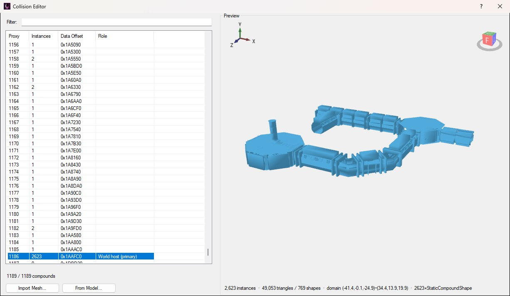
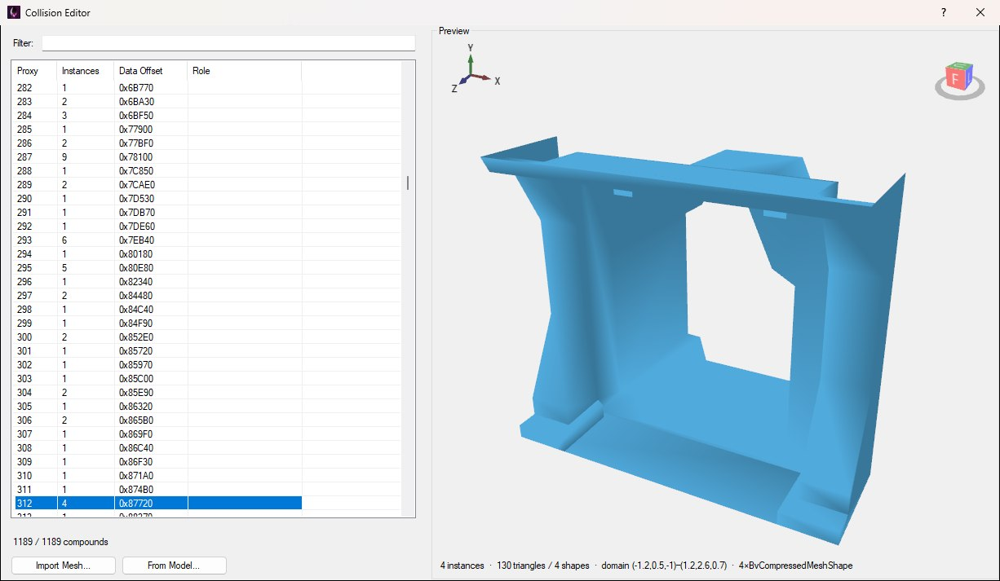
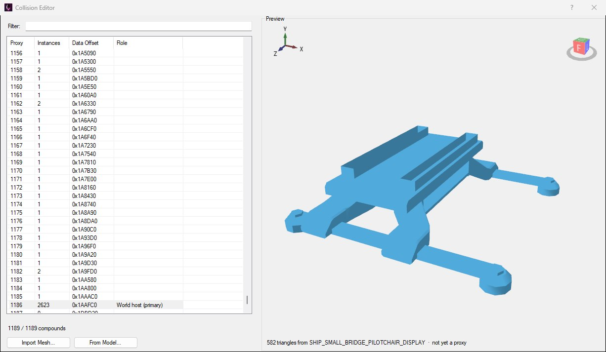
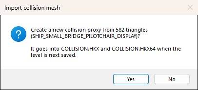

Alien: Isolation doesn't collide with the meshes it draws. Each solid object has a separate, simpler collision proxy: a Havok shape in the level's WORLD/COLLISION.HKX that the player walks on, the Alien paths around and bullets stop against. A ModelReference names its proxy through the Collision Mapping resource attached to it.
After loading a level, open View → Collision Editor to browse every proxy the level has, preview them, and import new ones from a mesh, as shown below.

The Collision Editor on Torrens with the world host selected: the preview draws all of the ship's static collision at once.
The same window opens as a picker from an entity's Resources button in the entity inspector, by clicking Set Havok... in its Collision Mapping group. As a picker it's titled Select Collision Havok Compound and has a Select Compound button (see Assigning a Proxy).
The list on the left has one row per proxy:
COLLISION.HKX, for cross-checking with other tools.Type in Filter: to narrow the list. It matches the proxy number, instance count, data offset and role, so typing world finds the world host. The line under the list counts what's shown against the total.
Select a row to draw that proxy in the Preview. Drag to orbit and scroll to zoom, as in the Model Editor's preview. The preview draws the triangles the game collides with, as they're stored, so a proxy looks the same before and after you import it. The status line underneath gives the instance count, the triangle and shape count, the domain (the box the proxy spans, in metres) and the most common shape types.

Proxy 312, an archway frame built from four mesh pieces in 130 triangles. Real collision is much simpler than the model it stands in for.
Two buttons under the list make a new proxy:
.cs2) and that component's first LOD becomes the proxy. This is the usual choice for a model you've imported, since the collision then matches what's drawn.Either way, the preview shows the triangles first, marked not yet a proxy, and you're asked before anything is created:


Importing a pilot chair with From Model...: the preview shows its 582 triangles, and the question names the files the proxy will be written to.
Click Yes and the new proxy appears at the end of the list, selected, and the line under the list says which number it got. No puts the preview back as it was.
Keep collision meshes simple. The game tests them for every step, ray and bullet, so a few hundred triangles that follow the shape are worth more than every bevel of the render mesh. A wall that only needs to stop the player can be a handful of quads. The preview shows exactly what you'll get, so check it before saying yes.
A proxy carries a physics material (what footsteps and bullet impacts sound and look like) and a collision type. Imported from a mapping's Set Havok..., it takes the mapping's material, so set the material on the mapping first. Imported from View → Collision Editor, there's no mapping to take one from, so it has no material.
Existing proxies can't be changed or deleted here: importing only ever adds one to the end.
Opened from Set Havok..., the window starts with the mapping's current proxy selected. Select another (a new import is already selected) and click Select Compound, or double-click its row, to give it to the mapping and close the window. Clear beside Set Havok... takes the proxy off the mapping again.
Opened from View, there's nothing to assign to, so Select Compound is hidden and a double-click only selects the row.
The proxy goes into the world wherever the mapping's entity is: Save and Build places a copy of it there, as it does for the level's own collision.
The editor has no Save button of its own. An imported proxy is held in memory and written when you save the level with File → Save Level (Ctrl+S). On PC that's both COLLISION.HKX and COLLISION.HKX64, which always get the same new proxy. A mobile or Switch level has only the 64-bit file, so only that one is written.
To see the collision in place, use Save and Build, then turn on the Viewport's collision render filter (see Checking the Result).